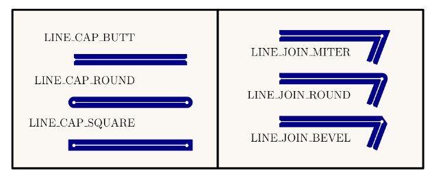
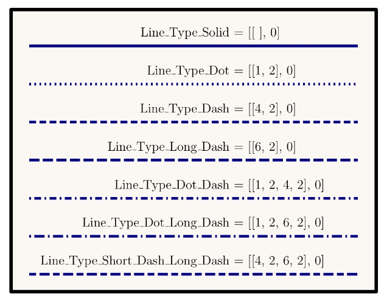

class Tioga::Strokes
These are the attributes for doing stroked lines in PDF graphics. The methods for strokes include stroke, #stroke_line, stroke_rect, stroke_frame, stroke_circle, stroke_oval, and stroke_polyline.
Public Instance Methods
Scaling factor for the width of stroked lines (default is 1). The stroke operations produce lines with a width determined by the product of the #line_width times the default_line_scale.
# File lib/Tioga/Strokes.rb, line 32 def default_line_scale end
The line cap style specifies the shape to be used at the ends of open
subpaths (and dashes, if any) when they are stroked. Valid values are the
predefined constants: LINE_CAP_BUTT,
LINE_CAP_ROUND, and LINE_CAP_SQUARE. For
LINE_CAP_BUTT, the stroke is squared off at the endpoint of
the path. There is no projection beyond the end of the path. For
LINE_CAP_ROUND, a semicircular arc with a diameter equal to
the line width is drawn around the endpoint and filled in. For
LINE_CAP_SQUARE, the stroke continues beyond the endpoint of
the path for a distance equal to half the line width and is then squared
off. See also line_join.

# File lib/Tioga/Strokes.rb, line 68 def line_cap end
The line join style specifies the shape to be used at the corners of paths
that are stroked. Join styles are significant only at points where
consecutive segments of a path connect at an angle; segments that meet or
intersect fortuitously receive no special treatment. Valid values are the
predefined constants: LINE_JOIN_MITER,
LINE_JOIN_ROUND, and LINE_JOIN_BEVEL. For
LINE_JOIN_MITER, the outer edges of the strokes for the two
segments are extended until they meet at an angle, as in a picture frame.
If the segments meet at too sharp an angle (as defined by the miter limit
parameter), a bevel join is used instead. For
LINE_JOIN_ROUND, an arc of a circle with a diameter equal to
the line width is drawn around the point where the two segments meet,
connecting the outer edges of the strokes for the two segments. This
pieslice-shaped figure is filled in, producing a rounded corner. For
LINE_JOIN_BEVEL, the two segments are finished with butt caps
and the resulting notch beyond the ends of the segments is filled with a
triangle. See also line_cap.
# File lib/Tioga/Strokes.rb, line 87 def line_join end
The line type controls the pattern of dashes and gaps used to stroke paths. It is specified by a dash array and a dash phase. The dash array's elements are numbers that specify the lengths of alternating dashes and gaps; the dash phase specifies the distance into the dash pattern at which to start the dash. The elements of both the dash array and the dash phase are expressed in user space units. An empty dash array and zero phase can be used to set the dash pattern to a solid line.
Dashed lines wrap around curves and corners just as solid stroked lines do. The ends of each dash are treated with the current line cap style, and corners within dashes are treated with the current line join style. A stroking operation takes no measures to coordinate the dash pattern with features of the path; it simply dispenses dashes and gaps along the path in the pattern defined by the dash array.
When a path consisting of several subpaths is stroked, each subpath is treated independently – that is, the dash pattern is restarted and the dash phase is reapplied to it at the beginning of each subpath. 
# File lib/Tioga/Strokes.rb, line 112 def line_type end
The width of stroked lines. A line width of 0 denotes the thinnest line that can be rendered at device resolution: 1 device pixel wide. However, some devices cannot reproduce 1-pixel lines, and on high-resolution devices, they are nearly invisible. Since the results of rendering such “zero-width” lines are device-dependent, their use is not recommended. The actual line width is adjusted according to the current value of the default_line_scale.
# File lib/Tioga/Strokes.rb, line 44 def line_width end
Sets a maximum for the ratio of the miter length to the line width (default is 2). When the limit is exceeded, the line join is converted from a miter to a bevel. This limit is needed since when two line segments meet at a sharp angle and mitered joins have been specified as the #line_join, it is possible for the miter to extend far beyond the thickness of the line stroking the path.
# File lib/Tioga/Strokes.rb, line 23 def miter_limit end
Adjust #default_line_scale by multiplying it by the given scale and adjust the current #line_width accordingly.
# File lib/Tioga/Strokes.rb, line 117 def rescale_lines(scale) end
Calls move_to_point, append_point_to_path, and stroke.
# File lib/Tioga/Strokes.rb, line 11 def stroke_line(x0, y0, x1, y1) end
Calls context, then, inside the new context, changes #line_type and stroke_color (if
those arguments are not nil), calls
append_points_with_gaps_to_path, calls stroke, and then saves the legend
information (if legend is not nil). Alias for
show_polyline.
# File lib/Tioga/Strokes.rb, line 123 def stroke_polyline(xs, ys, color = nil, legend = nil, type = nil, gaps = nil, close_subpaths = nil) end
Alias for line_width.
# File lib/Tioga/Strokes.rb, line 52 def stroke_width end